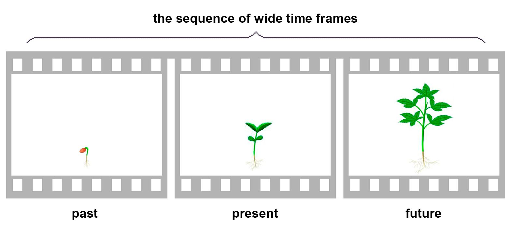

full contents of the book:
Nothing & Dot (Prolog)
Purpose
Contemplated
Entity
Consciousness
Two-Aspect (dualistic) Entity
Fourth dimension and ...
Society and Humanity
Fifth dimension and ...
Firstoccurence
Act of the “I”
The Proc.of study.the Act of "I"
The Meaning of Being
Development of Entity
The Collective Reality
the Entity Development System
Echo (Reflection)
Real Aspect of the Global I
About Worldview
Space-Time
Attitude toward Yourself
Attitude toward your body
Laziness
Fear
Hope (...for Miracle)
Adaptation
Identity of Personality
Relation [ Reason | Body ]
Free Will
Hard problem of Consciousness
Indistinguish and Identity
Matter
Gnoseology
Epistemology
Separation
to the home page
— Chapter Five —
————————————————————————————
————————————————————————————
CONSCIOUSNESS
We are accustomed to judge about 'It' rather peculiarly, and always implied "Consciousness" by what was considered the internal functional activity of the brain - the processes occurring in it, sensory, psychic, but chemical in their physical nature. Many inquisitive people suspect that this is not quite as it was considered, and not very easy to understand due to its unusualness. But the Truth, which is already known, will not change from our attitude to It, and will not bend to individual oddities of character;
Fundamental laws do not care whether we know about them or not. But are not indifferent for us. We want to explore the World, study Ourselves, and study sciences, to develop in order to know! To look openly, to breathe freely, and to live with dignity of a Human – having thrown off the rusty shackles of senile remnants and stereotypes. Otherwise, for a long time we will not be able to understand – What are We really capable of?
For the realization of volumetric (“3D”) objects, a corresponding space (i.e. place) is necessary, otherwise it cannot be realized … even in the virtual World; Let us assume that “Consciousness” provides for the “I” the realization of three-dimensional space and objects located in its volume. Why exactly does “Consciousness” provide the realization of space? And why is this realized “for I”, and not just like that – without reason?
Let us first answer the second question: We have not yet tried to prove the presence of other people in the "Isolated Area of Consciousness", and it is unlikely to be very simple, because space is realized individually (- complete isolation). We will study this a little later, but at this stage we can only assert that Objects and space are realized only for a
About of the first question, regarding the source of realization, it should be taken into account that the “I” is active and cannot be passive, that is, in relation to “Consciousness”, the “I” has opposite properties, otherwise it would contradict the balance of the necessary relativity of the being of the “I”.
As a result of what is known, "Consciousness" is static. We recognize only "I" and "Consciousness" as primary, this means that the active "I" initiates the realization of objects and space through "Consciousness", that is, it uses "Its" functional capabilities. With its intention, "I" leads "Consciousness" to "Active Realization". All this is too simple, however, when we get confused, we encounter difficulties that we ourselves have invented, but without any basis. Everyone knows that many people elevate the realization of reality to a supernatural creation (magic, sorcery), but everything has an explanation, logic and basis - Everything happens due to development, i.e. natural rational change - through the acquisition of experience of the active "I", or when applying the experience that is already there, but with the same purpose - Development;
The same becomes known in connection with life practice - the "I" is active and uses any available tools, and is interested in development - shows interest in "things" and situations. This is not an unfounded statement - when studying the "I", we take into account obvious facts, that is, our own properties and characteristics. When knowing Ourselves, it is necessary to identify the "I" being studied = Ourselves (I Am). We know that in order to carry out the Act of self-authenticity, the "I" uses reason, but Reason becomes available when the "I" influences Consciousness, and Is the Product of this relativity;
There are also very important facts and conclusions related to the development of Reason and its functions, but now this is not the time, we will definitely return to this later;
Any Being has relativity, which can be spatial – when the ‘interdependent arrangement of objects relative to each other’ is implied and used, but relativity can also be inherent – ensuring the ‘Harmony of the World’ in maintaining the Balance of Opposites, that is, what we usually call the Internal Energy Balance. Also in the properties of elemental compounds, and in the essence of important astrophysical Laws – the violation of this Balance is ‘strictly unacceptable’;
* * *
It is probably sometimes useful and necessary to look ahead, to grasp the ‘still unfamiliar’, for the subsequent realization of a more ‘Prepared and Justified Reality’. When the topic is extremely complex, all the contributing methods and opportunities should be used for better understanding, especially if it concerns worldview convictions and/or involves contradictions to persistent stereotypes;
For proper preparation, we will give the usual relations:
Cold/Hot, Near/Far, +/-, Heavy/Light, Reasonable/Unreasonable, and concerning our reasoning, the very important
Fundamental relation [“I” | “Consciousness”].
For a complete and deep awareness, the actual, that is, the “Full Being of the “I””, we recommend that you study, realize, and take into account the following most important relations:
[ «Abstract Being of the Global “I”», and |
«Being of the Global “I” in the Conditions of Reality» ];
Although is not yet timely, it is necessary to keep in mind:
1. We represent the “I” abstractly, i.e. the “One I” literally the General, which is each individual “Real aspect of the Entity” in reality – that is, it is present as the “Global aspect of the I” – nowhere specifically everywhere at the same time (It Is).
As an abstract – “One Self ('I')” is absolutely static and therefore is inherent in a wave nature, however, “Global aspect of the Entity” = “One Self ('I')”, or = “Global aspect of the Self ('I')”, necessarily has a balance – a Systemic opposite “Real aspect of the Global Self ('I')” – One and unique Only Fundamental Systemically Necessary Alive Being in the World, having access to the entire volume of experience and data. "The Global Aspect of the Entity in Reality" – He! Has unlimited possibilities - a potential equal to the sum of the potentials of all living beings in the World. Equivalent of the entire World. He, Incomprehensible. Eternal;
2. We also imagine the “I” in reality – as the usual, familiar to us – “I” in the body”, active, independent, manifesting will and intention, comprehending experience, that is, a living being in a body inherent to the nature of particles, and being in the conditions of reality. The “I” itself is the “Spark of Life”, that is, an infinitely small part of the Soul <“One I”> – “Global aspect of the Entity”. But, each “Real aspect of the Entity”, from the position of the “Real aspect of the Global I”, is defined as “Not I” ( – which, however, is quite natural);
The duality of the "I" is confirmed by the Corpuscular-Wave Dualism, and indicates Its connection with any dimensions. It is important that the Nature of particles is Reality, and in the absence of
Considering the fact of contemplating mental images that are not located in the “Space with Explicit Realization”, we can assert that the current “Explicit Space” is not the only one. Objects contemplated mentally, as if ‘once again inside’
All this confirms our conclusion that it is ‘Consciousness’ that realizes a potentially unlimited number of necessary spaces – for the specific needs of the ‘I’, in this case for the realization of three-dimensional objects, but we do not doubt our ability to extract experience using higher-order dimensions (– any degree of dimensionality, if this turns out to be available). However, now we assert only the most obvious fact:
Space is not "Consciousness";
This is a very important (for us) postulate, it will be useful not only in this study, but also in the life of someone who likes life :). Formulations and short theses that have a special meaning move us towards answers to the questions posed here;
Considering that we can close our eyes – refusing to contemplate the situation, or deliberately fall asleep, of our own free will – ceasing the realization of reality, the question arises: Can the “I” be Self-sufficient?
A positive answer to this question, in the ideal conditions of existence established by us, would indicate the complete irrelevance of the "I", which contradicts everything absolutely, that is, it is illogical and impossible, for a number of natural reasons. However, if "Any ideas, feelings, thoughts, data of memory, and anything contemplated, can exist exclusively in "Consciousness", in the form which we consider actual and valid, then irrelevance implies the "One "I"", and not in some Emptiness of the World, but namely as "There is only "I"", including everything conceivable and inconceivable, together with Emptiness, if we admit that It is possible at all". This means that "Consciousness" is inside the "I", but has a direct relativity to the "I". Also, in particular, that is - from the position of each living being in the World - this is so - taking into account all the facts about which we reasoned before;
Can it be proven that this is not so? (by disproving Solipsism)
We have found out before, we know, and have already said it many times, that we see everything we contemplate only in "Consciousness" ("I" see in Consciousness) and from the current position, "Consciousness", as the Cause (processor, mean handler?), is around, and precisely outside. When "Consciousness" is around - this means that "I" is in the center of the current space ("within the frame"), extracts experience acting in its own body in the conditions of reality, represents Itself in this form (body);
Consciousness inside means what we point to when we discuss the mechanism of contemplation [from a photon, through a signal, etc.] and call it “the handler inside the Self” and then about “I”, but again inside, which contemplates “This same thing”, already as a result of processing and again - “Consciousness” turned out to be inside, this is what we focused on and discuss. You will say: - It looks like a trick. - The reaction is understandable, but let us maintain attention. Let us explain (even if it is early) that the cyclicity ‘to inside, inside, and inside, ...’ is due to the four-dimensionality, but the ambiguity arises due to the Duality of the ‘I’;
However, everything is solved quite simply: reasoning – we say that we are immersed inside, and to the “I”, but, at the same time, we are always inside the “Consciousness”. This is tracked very simply – any situation can be realized only in the corresponding space, in the “Consciousness” and by means of “It”. “I” acts as an active trigger and initiator, in the conditions of reality = in space, and realizing this space in the same time;
Consciousness is always outside (a priori, and in any case);
However, we would like to find a simpler scheme (concept) - in the hope of offering you more transparent examples, and to cite them as evidence as a consequence of other, more understandable, conclusions. Therefore, for now we will only assert the following - anything, anything, is and can exist only relatively. This has a special meaning. Let us recall the Harmony of the World (inner Balance).
In connection with the established absolute impossibility of the unrelated existence of the "I", an important conclusion follows:
“I” exists
According to the Fact of Being and the Act of Self-Validity – “I” is the Active aspect. From the position of any person – this is the Fact of Being “I” and “My life Activity” in this regard. “Consciousness” always seems static, and provides “I” with the opportunity to manifest Activity. This harmonious relationship is the fundamental basis – the mutual relativity of [ “I” | and “Consciousness” ] (also in accordance with the inherent relativity, this is a balance: Static | and Dynamic), which represents a Single two-aspect Entity: [ “Global aspect of the Entity” | and “Real aspect Entity” ];. All this reliably proves that "Consciousness" is outside of everything Existing, and "I" - manifests "Its Activity" being inside the Static "Consciousness". When trying to reason about this in relation to the "Global aspect of the Essence" to "Consciousness", then Its position is abstract, and is everywhere, but "Consciousness" in any case
We also ask that you take into account the fact that we are researching, although we think and are accustomed to conditions that literally do not correspond to what we are discussing here, therefore we sometimes have to, to tell the truth, be creative, consider the static in sequential dynamics, which in fact can be dynamic and static at the same time, and we include the Two-Aspect “I” among such “things”.
When we attribute everything static to the nature of Consciousness, we should take into account that Consciousness realizes Spaces that are static by definition, but the content located in them is contemplated as dynamic. On the other hand, any content is only contemplated as dynamic, showing the static state of the object at each point of the wave of its dynamic state, successively one after another (a paradoxical fact). This is not a factual dynamic, but in practice (and in experience!) it is contemplated and taken into account exactly this way, and not otherwise. The
Unusual knowledge can only be obtained in the most unusual way;
For effective research it will be useful to keep in mind and take into account everything we already know - it will require a look at the studied picture as a whole, and from different positions. "Consciousness" is only intuitively and mentally understood as Space. To be more precise, "Consciousness" is primary, that is, as if "above space", beyond, it is level (∞+1), and is implied by the fundamental "like hardware" part, while Space (like any objects) are some software realization of the "place for images" - no less ephemeral and virtual, which we mean an image on a monitor or a volumetric hologram (made of colored sparks);
"Space" (volume) - is realized only statically relative to everything that is contemplated 'located' inside. Any objects located in Space are temporary (extremely unstable), dynamic, both inside and outside. It is always necessary to keep in mind that space is realized inaccessible to sensory perception, that is - we do not feel it and do not see it, but we are aware of its presence due to the relativity of the objects located in it. We especially note the fact that any
Geometrically, space is easiest to imagine in the form of a spheresince the radius in all directions is ‘equal to infinity’. The absence of space limits is beyond doubt, since space is realized through “Consciousness” as a wave function. Given the fundamental and direct contact with reality, Space, as we understand, has a unique and amazing property that is not inherent in objects, namely: it has no properties, dimensions, and is potentially infinite. Being the basis for the realization of objects in the conditions of reality, Space is fundamental;

fig. 2
(the Point in the center of space is "I")
The Systemic Function of Space is realized partially, as needed, when we are present and pay attention. The boundary of Space will retreat when approaching it, that is, Space is infinite, but - precisely preliminary. For example, if you fly to the "Nearest Star", need to realize the "pre-existing space", and fly at the speed of light for years, or billions of years;
With such a structure (of the system), the dimensions cannot be an obstacle, and do not have much significance, as well as time, therefore - anything is realized equally simply and instantly, a glass, trees and a cluster of galaxies. However, to study and gain experience, the dynamics of these objects and the situation - a process in time and space are necessary;
With constant attention -> in the direction of a specific point of concentration, the function of the realization of Space is interpreted and presented as an endless cycle, with expansion in all directions and moving away from the center - at the speed of light, as is appropriate in these conditions;
* * *
No, of course we are not in the matrix, and this is not a computer program. There is no point in creating this at the risk of making a mistake - everything works fine as is. Yes, for better understanding, we sometimes use terms and words "software, program, processor, etc." implying the structure and functionality of a living being - scientifically proven at the level of physical processes, which we have been observing and successfully studying for hundreds of years.
This is not a vain and greatest work - with one caveat - we studied the "Contemplated", but not the external, but only the structure of the images visible to us ("things"), a kind of "Parade of Illumination of Elementary Particles". With such a structure, it is not at all surprising that objects, when they are very close, consist of particles that do not touch each other
* * *
There can be no talk of external physical reality, we have reliably established this and repeated it more than once, but for ease of application in our research, it is necessary to understand many principles (seemingly obvious);
We propose to formulate from what is already known:
The Real Status of an object is its visible Status, corresponding to the current state – “an object with imposed experience”, and according to the new existing conditions;
Here, the concept of "Status" implies an ephemeral, but concrete state of the Idea of an object, in relation to other objects in a related situation, and according to strictly defined conditions. If the change in the state of an object is expressed by a wave function, then the point of attention (concentration) will always correspond to a specific moment of realization, and then the point seems to move along the wave of change of the object. In reality, we see a static state at a specific point, and each subsequent moment is different, at the next point, and then the next, and so on ... The object, in this case, is contemplated as dynamic in all respects, both inside and outside.
It is necessary to clarify the following about the contemplated moment - the really visible state represents precisely the final condition, that is, the state in which the object has already been completely transformed, and will be available in experience in a new state. We understand It as two-component: Idea + Wave of state; Looking at a fresh apple on the table implies Its Idea - this is the Apple Itself and + Condition of changing the state of a specific object, taking into account all factors. Let's say we put an Apple on the table at home, and went on a trip for six months. When we return and, remembering the apple, look at the table, we will see a rotten (half-decomposed), but already dry apple. That is, the Idea + the Condition that in an environment with room temperature, the apple will turn into what we saw after returning. In the given example, the conditions will be your experience in which apples spoil. Even if you did not see how the apple changed in the process, but a point on the wave of its state will not cause an error, based on the relationship of many, many factors in this situation, including physics, chemistry, biology, etc. If there is a Hamster in the house, in a cage, and he suddenly escapes, then the Entity will take it into account as a condition, then the Apple will most likely be eaten. The probability, which we call “most likely” will include the behavior of the Hamster, his intelligence, ability and opportunity to climb on the table, ... and so on;

fig. 3
Let us imagine a wave of each object, a supposed “frame of reality”, i.e. in one range of events and data on states, penetrated by a beam of the system function, perpendicularly “touching” one point of each wave, but corresponding to the moment - exposing what is contemplated in the form of a sensory result of processing, in the internal volume of the virtual 3D sphere of the contemplated reality (see fig. 3This is the final state of the transformation process: between the existing state of objects (in the situation) previously available in memory, and the state of already transformed objects, through the imposition of experience, which is stored as new experience. The point of attention has no relation to time, but represents a point "on a conditional scale" of the dynamic state of an object, as a process of transforming its past state into the future (if this is clearer). This does not prevent us from using time as a method of measuring relations, quantities, parameters and states (this is what happens), then - the point of the real moment on the "time scale" corresponds to some specific point of state on the "scale of the state of the object", but this is not the same thing at all - these are different scales considered at the same moment, albeit correlative, but conditionally. That is - according to an intentionally created, specific condition:
Time is a method of measuring relationships in real conditions accepted in a particular ‘Society’;
It is necessary to explain that in order to understand some (many) Laws, Truths, “things”, we are forced to consider them, breaking them down into successive chains, although these elements are phenomena of a non-physical nature, and since we do not have suitable tools of knowledge, except for those we use, then assuming ‘criticism outside attempts at understanding’ – we will continue without apology.
The moment of reality seems to roll on the waves of experience and events, directly dependent on the intention of the "I". If the temporal reality is an abstract boundary between the past and the future, then it is also a moment of transition, when the "future time" changes its status to "past";
The temporal extension of the "reality frame" cannot be measured, it does not exist. Consequently, anything dynamic, contemplated is unique and cannot be repeated under any circumstances. An object now, and "the same object" but in billionths of a second - differ from each other, almost like different objects. Everything is simple - object "A" existed before, but under the influence of experience and conditions
* * *
Let us digress for a moment to the “problem” of replacing all parts of a whole (either sequentially or simultaneously, which is irrelevant). This implies a certain monument, however, one can consider a similar act of replacing all parts of any ‘complex things’ with the question: Will the “Thing Itself” and the essence of the attitude towards it be preserved? Will not the replacement of all parts affect the attitude, due to the loss of the Status of the Original, and that true uniqueness and belonging that the ‘thing’ possessed in the first place?
Any object, as we have found out, at each moment differs from its previous form, mass, and composition. This is confirmed by physics, chemistry, logic, and also metaphysics;
Therefore, before the replacement of the parts of the "Ship of Theseus", the parts were already different from the original. The ship can be considered original only when it belongs to Theseus, and when Theseus himself is on it. In this case, the Essence of the replacement is not important - he (Theseus) could replace any parts, and at any time, this did not violate the ship's ownership. Theseus does not exist, as does his ship. If we only recognize the ship and honor it as a monument, then nothing can change this attitude, and nevertheless, the latter does not solve the problem, but – it is definitely solved by the fact that a ‘thing’ cannot be static in the conditions of reality, and the details of such, too, change at every moment. That is why the replacement of those parts that have become unusable – does not in any way violate the ‘essence of the Ship Itself’, as well as other ‘repaired things’, otherwise, we assert that – the originals actually do not exist, but our attitude is the only proof of the originality of ‘things’;
* * *
Let us once again pay attention to the realization. When the mechanism of contemplation is studied, we break it down into parts (studying step by step). In this case, we perceive and realize the processes that occur not step by step (that is, in the current mode) and the realization of reality, as a flow - dynamically, as if flooding (streaming) events [from outside -> into inside], filling the space. Here it is necessary to clarify that it is possible to assert that only the visible volume is filled, that is, that “there is something around the corner” – it is impossible to prove unless we use conditions that are still unknown to us. We have to take into account the periods (stages) that we consider in our reasoning, and their seemingly greater length in comparison with the transition of the point of attention (the point of concentration) along the wave of change of the object, or situation, ‘from one point to another’ – in this sense, there is no “real dynamics” at all, and the expression “real dynamics” is absurd to the point of impossibility, as are “real objects and situations”. That is, the processes being studied, ‘occurring in reality’, can be understood as ‘illusory’ and ‘pseudo-real’, …if try to scrupulously understand the “System Structure” – this will come in handy;
We continue the research using the separation method, as before (we have no other choice), otherwise it is impossible to understand, the final result is extremely important to us;
It is obvious that the "current objects mass" dynamically fills the
Transform the step-by-step reasoning into a flow, it turns out that being in an active state, we fly to inside Ourselves, participating in events - constantly trying to gain experience and this corresponds to the phrase: “To live, you need to learn” (develop);
Why “trying”? Because experience should be divided into passive (just empty), which could not be extracted – which was missed in the development process, and effective – i.e. completely new, extracted through existing experience, necessary for further development and useful;
While exploring, we must constantly remember about the current flow (as a condition), more precisely: about our flight into the Self and immersion into the “I”. This is very important. There is a valuable meaning in connecting this interesting fact with the ‘catchphrase’ of Delphi: “know thyself”. The complex can be too simple;
* * *
We will also consider the current notion of reality, perceived as a simple sequence of -broad- time frames. For example, if we are talking about the past, then this category includes long-term events, or certain extended states, which we draw in the same way as we imagine a "reality frame" and then return this picture for analysis - we do this again and again. Also, people often worry about something, and project a returning frame that irritates the psyche when they “voluntarily practice experiencing.” By the way, they receive a specific experience, which is subsequently necessarily transformed into something unpleasant;
Reality in such falsifications represents a whole ‘period of the necessary degree of clarity’. The clearest and most detailed ‘fresh past’ is available in memory for a shorter time than low-detailed events in their general presentation. Over time, the past will no longer be able to return as it was remembered at the moment of the realization of the long-past reality, since the attitude towards the events that happened will change radically. But, we are always learning the business of acquiring experience, and periodic analysis of similar

fig. 4
(wide time frames are supplemented with data from memory)
If we assume a ‘time machine’ and move to a familiar past - for the traveler everything will be different, not like before, but completely new, and he will get a new experience. Everything that we do not see constantly, or almost daily - when meeting can turn out to be an amazing surprise;
It is appropriate to briefly talk about the future. First of all, it should be understood that the future as such does not exist, but one can fantasize in imagining it. The future, that is, ‘in mental space’, is realized only taking into account the existing experience, and if you suddenly move with a time machine ‘into the future’, five years ahead, and then return to the starting point, then when these same five years have passed, but in the usual manner, the place of visit will be realized completely differently, taking into account the experience acquired during the past five years, but in completely different conditions, including the experience gained when visiting the future using a time machine. And yet, this is nothing more than fantasy, because the future does not exist, but, from the current point of realization, as we have already established, it (the future) is formed from the existing experience, but travel to the past is most likely possible, or will become possible. But, there are also oddities;
* * *
If we assume that our X100-great-great-children (that's ~5 thousand years about) did invent a time machine and traveled to our days. Theoretically, when returning back, they could take a traveler from our time with them, with the purpose of visiting (him) the future. In our 5000 years, with the complete absence of time for the Entity, and taking into account the exponential growth of the level of technology - they already have such a device, and then the UFOs flying everywhere - it is they (i.e. earthlings, people) from the future, flying and living among us, with the purpose of studying and, probably, correcting events in their time. They do not make contact because of the threat (development) of dangerous consequences due to interference. Let's call it fantasy and continue, here, our down-to-earth research (just joke);
* * *
The future is only imagined, although the near future is assumed to be quite clear, and even as if it is visible, but it is far from a fact that it will be exactly as it is visualized. However, having even vague plans, we can anticipate the research and say that the flow of events, which seems to be habitual spontaneity, is ‘controlled’ by the “System of Entity Development”, but we will not go into this topic, at this stage it will simply amuse our wild fantasies;
We understand that “Reason”, as an instrument (‘soft’, or software processor) – has an indirect relation to absolutely everything, for we are not even able to think of Ourselves without using Its comprehensive functionality;
“Reason” never leaves us as long as we (being in our right mind) are able to identify ourselves and qualify our own actions <...through the sense of conscience and moral laws>.
Thus, we separate the "I" from the "Reason", there are grounds for this. Without the "Reason", the "I" cannot recognize itself, define itself as concrete, or as actually existing, and precisely in a concrete body.
Therefore, "Reason" is an instrument, and "I" is not it ("Reason"). Consequently, "I" has no fundamental relativity to "Reason", since, when available, It is "the Own Reason of the concrete I". When the “I” realizes (this: 'create'; through its “Consciousness”) its own existence in the conditions of reality, then – [ “I” + “His Reason” ] appears indivisible. “Reason”, without an operator (“I”) is the most ordinary wave function, and cannot exist independently in the conditions of reality – this is unthinkable due to an internal error, or, if we deliberately make such an error, then, logically, “I” will turn out to be transcendental, just as everything would become incomprehensible, including what we are discussing (not only here);
Without Reason everything is meaningless and incomprehensible;
Some people can go into the astral plane. The Reason, in this case, remains active together with the “I” and allows us to state this exit, i.e. – it also 'leaves' the body, if we can look at it (the body) from the outside and at the same time recognize it, lying separately, as our own;
We also know that in dreams the Reason functions rather strangely, but quite successfully, the "I" can think, experience emotions and manifest intention. It is also clear that the Reason is not space | the body is not the Reason, and | the Reason is not part of the body. The "I" defines itself exclusively through the Reason.
Therefore, in the process of cognition we will imply that “I” is rational (have Reason), possesses and controls Reason. “I” is and exists only in relation to Consciousness; Considering that “I”, the entire World, that is, everything absolutely, cannot exist outside of Consciousness, then Reason arises as a consequence of experience – forming and developing literally from scratch (presumably start in the process of conception). From all this it follows that the Reason is individual and absolutely unique, this is reliably proven and confirmed;
* * *
The strange thing is that even thoroughly understanding the entire logical chain, the Reason always tries to find a clue that maintains a connection with previous ideas about the structure of the World, being oppressed by the influence of stereotypes and other mental parasites, however, it is necessary, having discarded the dross of ignorance - to understand and imagine as it really is, without any emotions, extraneous thoughts and doubts. From position of everyone: "I want to understand this, and develop as effectively as possible";
read next chapter >> << back